Not long ago, making even a rough game prototype meant mastering a full stack of disciplines most people don't have: coding, game engine, graphic asset creation, audio editing, writing and balancing rules, etc. You either have to be an excellent all-rounder technical person, or having the budget to hire several people. And in any case, it takes time. Days, or even Weeks.
The consequences went beyond inconvenience. When prototyping is expensive:
- Ideas stay stuck in notebooks
- Investment flows toward "safe" bets — sequels, proven genres, low-risk variants
- Innovation gets filtered out before it ever gets a fair try.
That constraint has now collapsed. AI handles the full technical execution — code, graphics, docs, and more — so you can take any idea from concept to playable prototype in a few hours. Test it. Feel whether it's actually fun. Decide if it's worth pursuing before committing real resources. And if it's not — discard it and try the next one, at a cost that makes that affordable.
| Task | Non-tech person — alone | + AI Chat GPT / Claude / Gemini |
+ AI Agent Codex / Claude Desktop |
|---|---|---|---|
| Game design, story & wireframingconcept, rules, narrative, design docs | ✅ Can do | ✅ AI as thinking partner; structures & writes GDD, rules, narrative, draw wireframe | ✅ Agent writes & saves all docs/visuals directly to your project |
| Game programmingarchitecture, logic, physics, input, UI code | ❌ Requires coding skills — must learn or hire | ⚠️ AI writes snippets; you still assemble, integrate & debug manually | ✅ Agent architects, writes, runs, and fixes end-to-end |
| 2D art & visual assetssprites, backgrounds, UI graphics | ❌ Requires art skills — must learn or hire | ⚠️ AI generates images in chat; you place them in the game manually | ✅ Generate + integrate into project automatically |
| Animationsprite sheets, UI transitions, motion | ❌ Requires animation skills — must learn or hire | ❌ Chat AI cannot produce animation files | ⚠️ Basic CSS / spritesheet animation only |
| Sound & musicsound effects, background music | ❌ Requires audio skills — must learn or hire | ⚠️ AI suggests free sources; cannot create or integrate | ⚠️ Can source from free libraries & wire into project |
| Version control & deploymentgit setup, commits, live URL | ❌ Requires technical skills — must learn | ⚠️ AI explains each step; you execute manually | ✅ Agent sets up, commits automatically, deploys to live URL |
| Debug, Playtest & Iterateplaying, observing, giving feedback | ⚠️ Come up with improvement ideas. Hard to self-implement. | ⚠️ AI can only suggest fixes on very specific snippets, from your description | ✅ Agents read files, think, make changes, test, report. The full loop. |
How to use this guide
Work top to bottom. Each phase has a checklist (tick as you go) and one or more ready-to-use prompts — copy the prompt, paste it into your AI, and replace anything marked [LIKE THIS] with your own game's details. You stay the designer and director; the AI is your all-around technical executor.
0Set up your tools
One-time setup. These tools do far more than write code — they scrape websites, edit images, generate game sprites, and help draft design docs. Get them configured once.
- Create a GitHub account and a new public repository. This stores every step so you can compare, roll back, and host the game for free later.
- Install GitHub Desktop and clone the repo to your machine. A friendly UI for commits — you won't need the command line.
- Install Visual Studio Code to read and edit source code. To read the code the AI writes and make tiny tweaks yourself — faster than asking the AI.
- Pick and install ONE AI coding agent (desktop app). See the comparison below. The workflow is nearly identical across all three.
| Aspect | Claude (Claude Desktop) | ChatGPT (Codex) | Gemini (Antigravity) |
|---|---|---|---|
| Creating an account | ⚠️ Harder — appears to block new Vietnam phone numbers | ☑️ Easy | ✅ Most people already have a Google account |
| Code & reasoning power | ✅ Strongest | ✅ Strong — Codex excels at game prototype code | ☑️ Solid, usable |
| Image & sprite generation | ⚠️ None built-in | ✅ Yes | ✅ Yes |
| Video / music generation | ⚠️ None | ⚠️ None | ✅ Yes (Veo, Lyria) |
| Connecting to apps & services | ✅ Plugins, MCP, Office | ☑️ Plugins, MCP | ✅ Native connections to Google apps/services |
| Bundled perks | None | ✅ Free Plus month for everyone (mid-2026) | ✅ YouTube Premium · 5TB Google Drive |
Roughly $20/month (~500K VND) for the Plus/Pro tier of any one of them. Quick take for mid-2026:
- Gemini shines during planning (use Canvas to draft GDD/TDD/plan live, export to .md when done) and has the best bundled value-for-money overall.
- Codex is the standout for executing the technical tasks of game prototyping right now — capable coder, game-studio plugin for sprites, and a free Plus month to try.
- Claude is strongest for pure reasoning and writing, and Cowork adds practical non-coding tasks (image editing, web scraping).
For this workflow, start with whichever you already have — the prompts work across all three.
The agent interface may looks similar to normal chat window. But do explore - it's much more powerful. The key things are: giving it access to a local folder, pick the right permissions level, and the right model. Below is a screenshot of Codex.
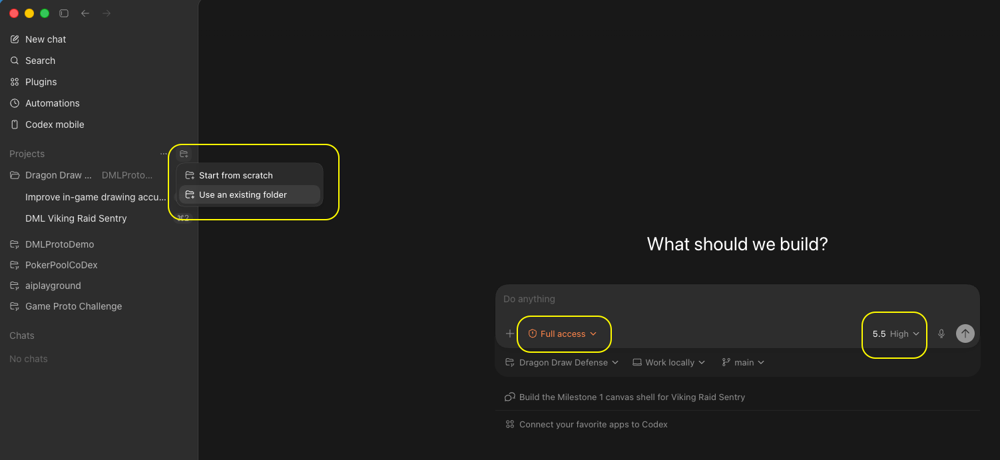
For brainstorming & design, use a mid / creative model (e.g. Claude Sonnet, Gemini Flash, ChatGPT "medium" reasoning) — top models over-optimize for logic and under-deliver on creativity.
For technical design and planning, use the highest model and thinking effort.
For the coding, start with the mid-level model — it should works fine for simple game prototype. Only switch up to the strongest model when you genuinely can't get the result you want.
1Find the idea
Use the chat AI as a thinking partner. Make it ask you questions — the best idea still comes from you. Pick whichever prompt matches your situation: an open brainstorm, or one anchored to a specific theme.
- Use a creative (mid-tier) model , in English if you can. Saves tokens and improves quality.
- State who the players are — both prompts ask for it, because a game for kids and a game for puzzle fans lead to very different ideas.
- Make the AI ask you clarifying questions before it proposes anything.
- Get 10+ ideas, each with a clear gameplay description and annotated ratings — concrete "what the player does" language, not inspirational copy. Ratings let you compare objectively.
- Discuss back and forth with AI untilyou have a clear favorite. Or ask for more.
Version A — open brainstorm (no fixed theme)
I want to prototype a game. Help me find ONE creative, fun game idea worth building. The game is for this audience (the people who'll play it): [DESCRIBE PLAYERS — e.g. "casual mobile players", "kids 8–12", "puzzle fans"]. Let's brainstorm together — ask me clarifying questions first if anything is vague, don't jump straight to answers. Constraints for the idea: - Must play well on BOTH desktop and mobile (fun with touch / tap / swipe) - ONE interesting, reasonably innovative core mechanic — not a clone - Small enough to prototype in a few hours (a vertical slice, not a full game) My hobbies / interests to draw from (optional): [FILL IN — e.g. Poker, Pool, Piano, Origami — or delete this line] When I say "ready", present at least 10 ideas as a numbered list. For each idea: - One short paragraph describing the gameplay clearly and concretely (what the player does, what the game responds with, what makes it fun — no inspirational fluff, just how it actually plays). - Annotated ratings: Innovativeness · Mobile fit · Mechanic clarity · Feasibility (hrs) · Player appeal — each rated Low/Med/High with one phrase of reasoning. Then call out your top 3 picks with one sentence on why each is a strong prototype for this audience.
Version B — themed brainstorm (AI researches the theme first)
I want to prototype a game built around a specific theme. Help me find ONE creative, fun idea worth building. The game is for this audience (the people who'll play it): [DESCRIBE PLAYERS — e.g. "casual mobile players", "fans of the theme", "kids 8–12"]. Theme: [STATE YOUR THEME — e.g. "Dragon Mania Legends", "Vietnamese folk tales", "outer space"]. First, RESEARCH the theme so the ideas feel authentic: - Look up the theme's signature elements, characters, mechanics, tone, and visual identity. - Summarize back to me, in a short list, the 5–8 most distinctive things about it that a game could build on. Then brainstorm with me. Ask clarifying questions if needed. Each idea must: - Stay true to the theme's identity - Play well on BOTH desktop and mobile (fun with touch / tap / swipe) - Have ONE interesting, reasonably innovative core mechanic — not a clone - Be small enough to prototype in a few hours (a vertical slice) When I say "ready", present at least 10 theme-based ideas as a numbered list. For each idea: - One short paragraph describing the gameplay clearly and concretely (what the player does, what the game responds with, what makes it fun — no inspirational fluff, just how it actually plays). - Annotated ratings: Innovativeness · Mobile fit · Mechanic clarity · Feasibility (hrs) · Theme authenticity · Player appeal — each rated Low/Med/High with one phrase of reasoning. Then call out your top 3 picks with one sentence on why each is a strong prototype that fits the theme and this audience.
Below is an example of output given by Claude, in normal Chat mode. It's a bit of an Overkill, yeah 😆
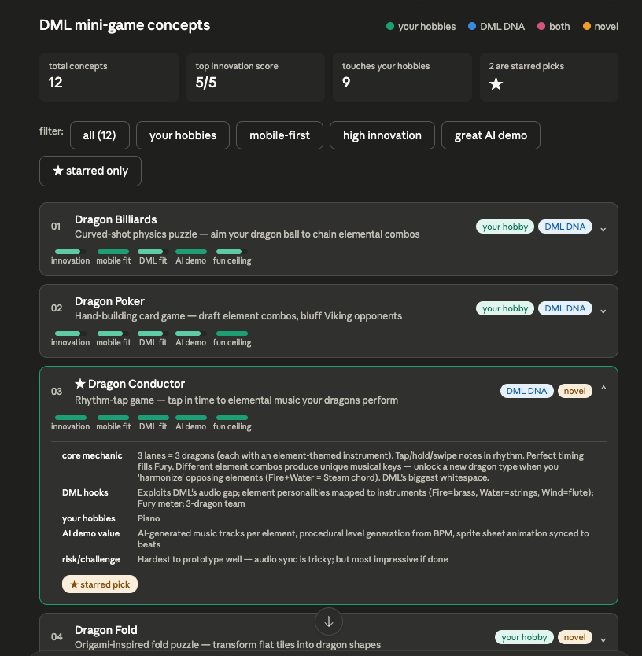
2Lock the design — write the GDD
Discuss the idea in chat until the core loop feels fun on paper, then write a lean Prototype GDD. This is the biggest time-saver — nail the mechanic in plain words before any code exists.
- The core mechanic is one sentence you can say out loud. Keep refining until you can.
- Ask the AI for a labelled wireframe of the main screen — shows layout problems before any code exists.
- Define the vertical slice — the smallest thing that proves the mechanic is fun.
- Write the non-goals. What you won't build matters as much as what you will.
- GDD is design only, under ~2 pages — no file names, code, formulas, or configs (that's the TDD's job).
- Every rule is implementable by a stranger — no "you know what I mean".
- Review the GDD in VS Code and fix small things yourself before moving on.
Let's lock the design for [GAME NAME / chosen idea]. Write a PROTOTYPE GDD as a Markdown file: gdd.md Rules: - This is a PROTOTYPE design doc, not a commercial GDD. Keep it lean — aim for under ~2 pages. - Pure design only. NO technical content (no file names, no code, no formulas, no configs) — that goes in the TDD. - Structure: Pitch · Design Pillars (2–4) · Core Mechanic · Core Loop · Rules · Controls (mobile + desktop) · UI layout/elements · UX flow · Win/Lose · In-Scope (vertical slice) · Non-Goals. - Every rule must be unambiguous enough that a coder who never spoke to me could implement it. - Where a number matters (turn limit, hand size, timing window), state it — but keep it in plain language, not code. Also produce a VISUAL MOCKUP of the main gameplay screen: a clean labelled wireframe (inline SVG or simple HTML/CSS in an artifact) showing where the play area, controls, HUD/score, and key UI elements sit. Keep it schematic, not polished art. Ask me up to 3 questions if anything is ambiguous BEFORE writing.
Use Gemini to draft the GDD (and later the TDD and plan) directly in Canvas — it lets you edit the
document live as you chat, which is ideal for iterating on design decisions. When you're happy with it, copy
the text and save it as gdd.md manually.
The GDD and wireframe work as a pair — the wireframe makes abstract layout decisions visible before any code exists. If something looks wrong in the wireframe, fix it in the GDD now. Changing layout after it's coded costs 10× more effort.
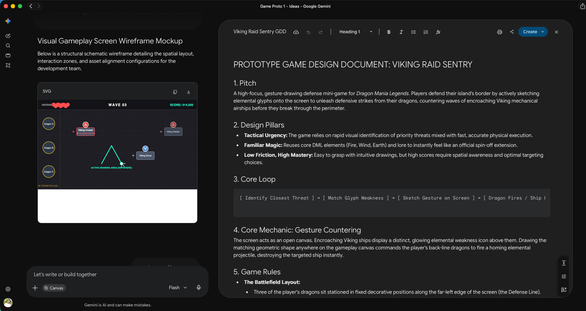
3Write the TDD — with all the rules baked in
Don't ask for a "technical design document" generically — the AI will give you something bland.
Hand it your exact engineering constraints. This prompt already contains all of them. Save the result
as tdd.md.
- Centralized config + zero magic numbers so non-coders can tweak and playtest.
- Strict separation of concerns (physics / render / rules) — keeps the AI from breaking everything on a refactor.
- Incremental edits + commit after every turn with conventional messages.
- Logging, non-coder comments, and a test suite run every turn.
- Workspace & build health checks before the AI reports success.
Put on the Game Architect hat. Create tdd.md (Technical Design Document) for this prototype, based on gdd.md. Move ALL technical content here: architecture, code conventions, math/formulas, and the full list of tunable configs. The TDD MUST explicitly encode these requirements: 1. Single centralized configuration file. ALL mechanical, physical, and rules-based constants live in one dedicated config file (e.g. src/config.js) so non-coders can tweak and playtest. 2. Zero Magic Numbers. No pixel dimensions, speeds, friction, colors, or turn limits hardcoded in game loop, physics, or render files. 3. Self-documenting config. Every config key has a natural-language comment explaining what it changes and its recommended range. 4. Maximum separation of concerns — decoupled source files between game states, physics, ui, etc. 6. Commit after every turn. On completing a request: run a local compile/build check, and if it passes, do a Git commit with a clear conventional message (feat:/fix:/chore:/test:). If the build fails, fix it first. 7. Automated workspace diagnostics. Before reporting done, verify the local dev server is running; if not, start it. Note any sandbox limitation that blocks running the server/tests locally and tell me to run it on my machine instead. 8. Health & compilation check. Confirm the build compiles cleanly with no errors before reporting success. 9. Logging. Add log messages with essential info at all key interactions for easy debugging. 10. Comments for non-coders. Add enough code comments to guide a non-coder on how to modify important behavior. 11. Tests. Write a test suite for all logic-based code and run it every turn. Update tests for each new feature or design change. IMPORTANT: The TDD should be concise, clear, but not too detailed. It should confirm the overall architecture, and is a doc written by senior developers as GUIDANCE for junior devs to implement, but do not go into actual implementation itself. Ask me about my game's specific layers/mechanic if you need to before finalizing.
Using Codex, you can preview the .md in the app itself. Of course, VS Code will be way more useful for editing the file.
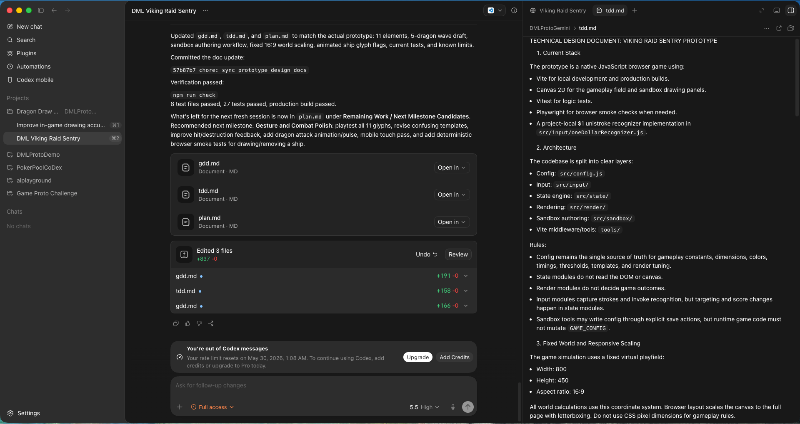
4Build plan — 2 or 3 milestones
Split the work into 2–4 milestones depending on your game's complexity. Highly recommend. If you ask AI to code everythign at once, there's a very high chance that you'll have to redo/rewrite a lot afterward, and it's easy for AI to make mistake both in the first implementation and in the edits. With clear milestones, you ensure solid foundation before adding complexity.
- 2–4 functional milestones , each building on the last.
- Divided by what THIS game needs — the mechanic drives the split, not a generic template.
- Every milestone delivers real functionality progression
- Each milestone has a user-facing test checklist and a copy-paste agent prompt.
- Sanity-check the plan — have the AI summarize the milestones and its reasoning back to you before building.
Put on the Tech Lead hat. Create plan.md — a build plan with 2 to 4 milestones. Important: the milestones must be split MEANINGFULLY around THIS game's own mechanic — not a generic template. Read gdd.md and tdd.md, then divide the work into functional layers that each build on the previous one and each end in something I can actually play or test. As a rough guide (adapt to the game): - Milestone 1 is usually the static foundation: scaffold, centralized config, the scene/board/world laid out correctly, HUD placeholders, clean module boundaries. It runs and looks right; the core interaction isn't live yet. - Milestone 2 is usually the core mechanic itself — the ONE thing that makes the game fun, working end-to-end (input → simulation/logic → feedback). This is the milestone that proves the idea. - Milestone 3 (if needed) is usually the rules, win/lose, and full game loop wrapped around that mechanic, plus a GitHub Pages deploy so it's shareable. Skip this if the game is simple enough that it can be included in Milestone 2. Tell me your reasoning for the split before listing the details. Do NOT make the last milestone a generic "polish" pass; every milestone must deliver real functionality. Each milestone must include: (a) a short scope paragraph, (b) a checklist of things to test FROM THE END-USER's perspective, (c) a single copy-paste prompt for the local AI coding agent — and that prompt must explicitly remind the user to run the test checklist. Follow tdd.md for all conventions. Write plan.md now. Then summarize back in chat the list of milestones, its main scope, and your reasoning.
Each milestone ends with a test checklist written from a player's point of view — not a developer's. "The ball bounces off walls correctly" is a player test. "The physics engine is initialized" is not. If you can't describe what to test in plain terms, the milestone scope is probably too vague.
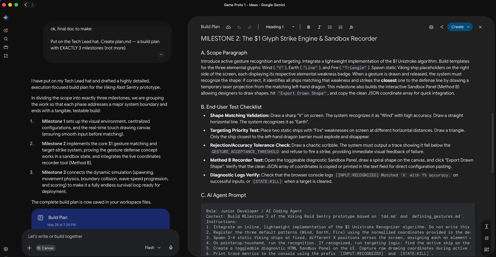
5Build, milestone by milestone
Before the agent writes much code, set up version tracking and the commit habit:
Initialize a git repo and commit all current files in this folder. From now on, in ALL of our conversations: after each turn, run a build/compile check; if it passes, commit all changes with a clear, concise, conventional message (feat:/fix:/chore:/test:), and push to this repo: [PASTE YOUR GITHUB REPO LINK] If the build fails, fix it before committing.
Switch to your AI coding agent (not chat) — it reads, writes, and runs files directly. Context windows are large and auto-compress, so stay in the same session while you're in flow. Start a fresh session when the AI gets confused, loops on a fix, or you're shifting to something unrelated. Always paste the current docs at the start of any new session. Start with the mid-level model; only escalate if you get stuck.
- The docs are the memory, not just the session. Keep gdd/tdd/plan current and you can start a fresh session any time — the AI re-orients instantly. Start fresh when it gets confused or loops; otherwise stay in the same session.
- Run the milestone prompt (below), then do the test checklist from plan.md yourself.
- Converse back and forth with the AI: Talk as if you are talking to a dev — say what you need to change, and let the dev do it.
- Make your own manual edits: open the folder in VS Code and tweak config file as needed. Perform text search across all files (Ctrl+Shift+F) and make text adjustments.
- After a milestone, refresh the docs (gdd/tdd/plan). Then continue in the same session or start fresh — current docs make either option equally easy.
We are building [GAME NAME]. Read gdd.md, tdd.md, and plan.md first. Execute Milestone [1 / 2 / 3] from plan.md, following every convention in tdd.md (centralized config, zero magic numbers, separation of concerns, incremental edits, logging, comments, tests, commit-after-turn). Work in small testable steps. When done, verify that the game is runnable and accessible via an URL, create and run tests on the logic parts, report the results. After everything is done, show user both the URL to test the game AND the list of things to verify on their end, for this milestone.
Here you can see the agent worked autonomously for 12 minutes and create dozens of files, to finish the first 2 milestones. It even write automated test scripts and run the game in a browser to verify its work.
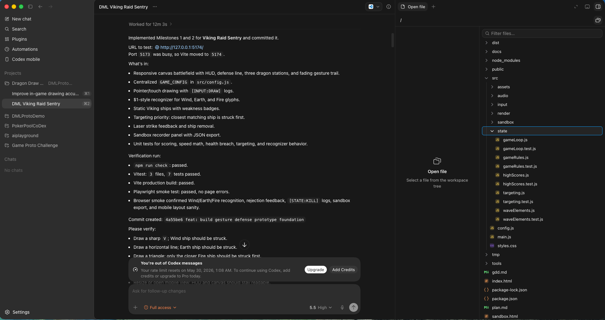
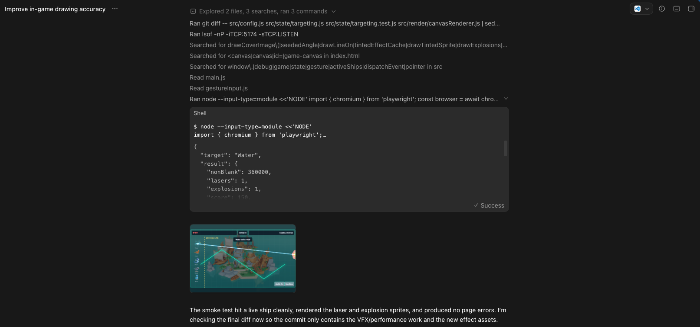
6Fix bugs the smart way
Iteration is normal — even human devs never get it right in one shot. Give the AI the right evidence and it fixes fast.
- Visual bug → attach a screenshot. Words alone rarely convey a layout problem.
- Logic bug → open DevTools (F12) → Console → paste the full log.
- Watch the AI "think" — if it's heading the wrong way, stop it early to save time and tokens.
- Stuck for a while? Start a fresh session and ask it to explain the feature's flow before fixing.
- Tell it to add debug logs when a bug is hard to pin down.
Here's a visual/UI bug. [ATTACH SCREENSHOT] What's wrong: [DESCRIBE what you see vs. what you expect] Find the cause, fix it via the centralized config or the render layer (not by hardcoding), keep the fix incremental, then tell me exactly what you changed and which config value I can tweak to adjust it further.
Here's a logic bug. Console output below. [PASTE the full console log from F12 → Console] What happened: [DESCRIBE the wrong behavior] What I expected: [DESCRIBE correct behavior] Diagnose the root cause, add temporary debug logs if helpful, fix it incrementally, update the relevant test, and explain the fix in plain language.
We've been stuck on this bug for a while. Don't patch blindly. First, review the relevant code end-to-end and explain to me, in plain language, the full flow of how [FEATURE] is supposed to work. Then point to where the flow breaks. Wait for my confirmation before changing anything.
Two things are extremely useful: screenshots, and console log. Still, sometime, the best thing that helps unblock a tricky situation is a sharp human-observation!
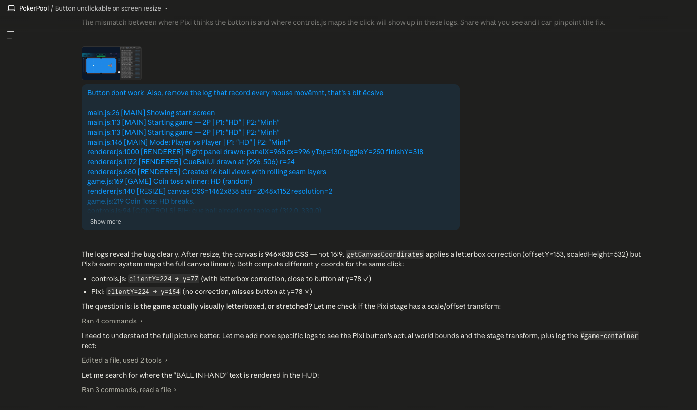
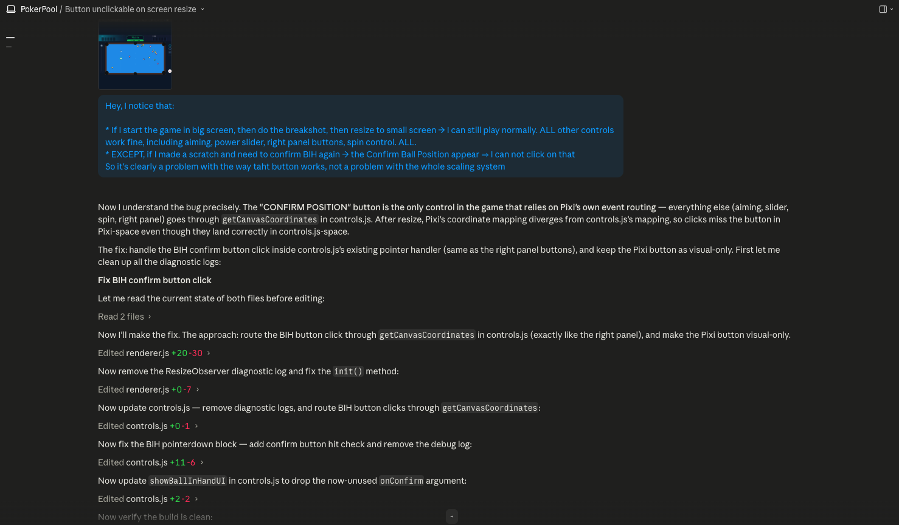
7Iterate — add features & keep docs current
A prototype is never truly done in one pass. Once the core loop works, you iterate: add a feature, tweak a mechanic, try something new. Keep the docs in sync after each meaningful change — they're the AI's memory.
- One feature at a time. Describe it clearly, let the AI propose the implementation approach before coding.
- Request multiple agents to perform tasks in parallel to save time, if the tasks are fairly independent and contained (for example 1 agent on images, 1 agent on sprites, 1 agent on UI bug...)
- Keep the docs updated whenever you make a decision that changes how the game works or how it's built.
- Start a fresh session when the AI gets confused or loops — not on a fixed schedule. If you're in flow, keep going. Always paste the current docs at the start of any new session.
- Use the AI for non-code tasks too: scrape reference sites, generate sprite sheets (Codex game-studio plugin), remove image backgrounds, resize & flip assets — the agent can handle all of this.
Read the current docs (gdd.md, tdd.md, plan.md). I want to add this feature: [DESCRIBE the feature clearly — what the player does, what the game responds with] Before coding: propose how you'd implement it, what files you'd touch, and flag any risks. Wait for my go-ahead before writing any code.
Review the current state of the code and update gdd.md, tdd.md, and plan.md to reflect what we actually built and any decisions that changed along the way. Keep each doc concise — remove anything that's no longer accurate, add anything that's now true. Commit the updated docs.
AI is not just for coding. Here, it helped me scrape the dragons, generate ships, find assets in a package of thousand files, and even build a full-features game editor
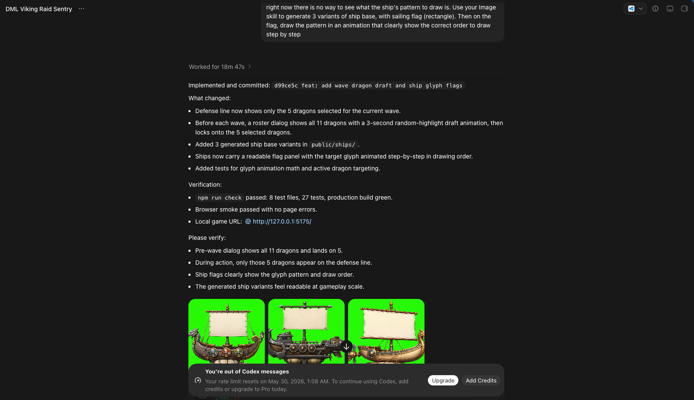
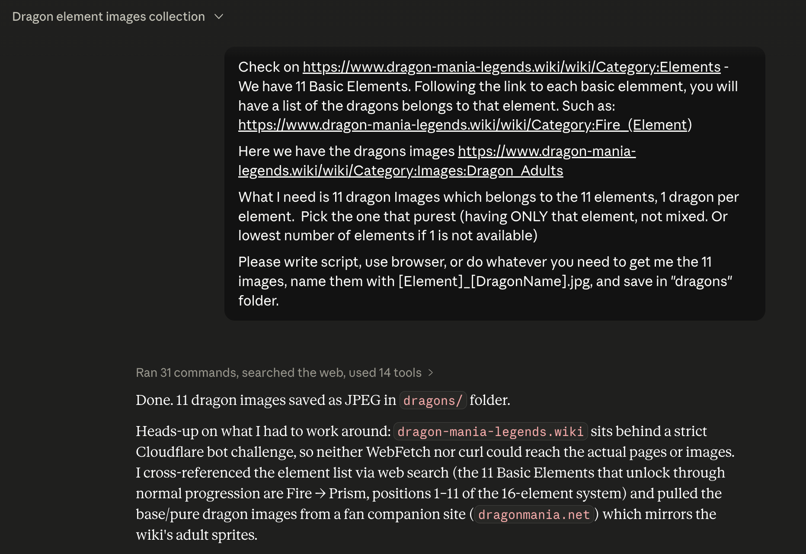
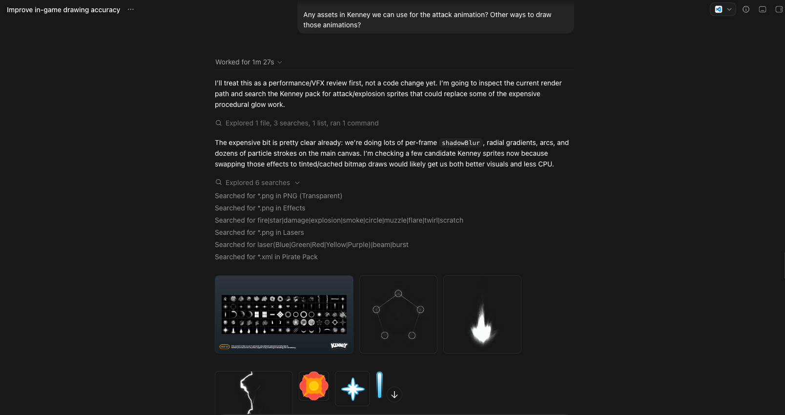
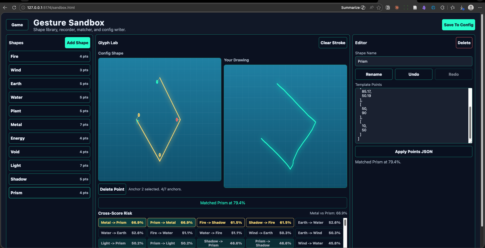
8Ship it — share a live link
For an HTML game this is easy. The agent writes the deploy workflow; you flip one setting in GitHub.
- Have the AI prepare the GitHub Pages workflow and push it.
- In GitHub → Settings → Pages, set Source to "GitHub Actions".
- Confirm the live URL works on both desktop and a real phone.
- Send the link to playtesters and collect feedback — the whole point of a prototype.
Prepare this project for a GitHub Pages workflow that auto-publishes after every push to the main branch. Do everything you can yourself (create the workflow file, set the correct build/base settings, commit, push). Then tell me exactly what I need to do on my side in the GitHub web UI, step by step.
The GitHub Pages setting is the only manual step in the web UI. After that, every push from the agent automatically updates the live link — no manual deploy needed. Share the link with playtesters immediately: getting real hands on the prototype is the whole point. Here is a look of Dragon Draw Defense:
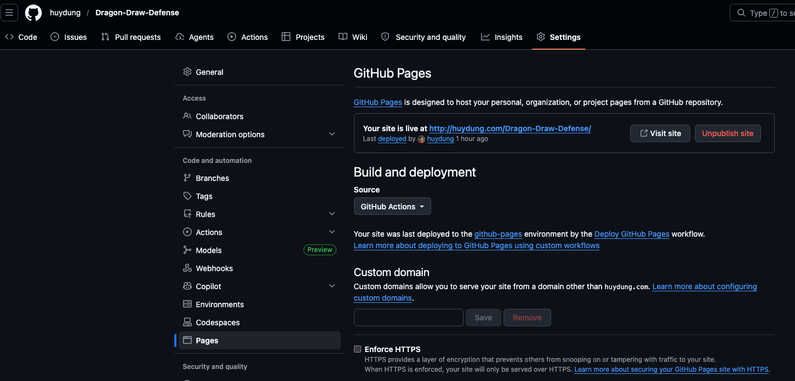
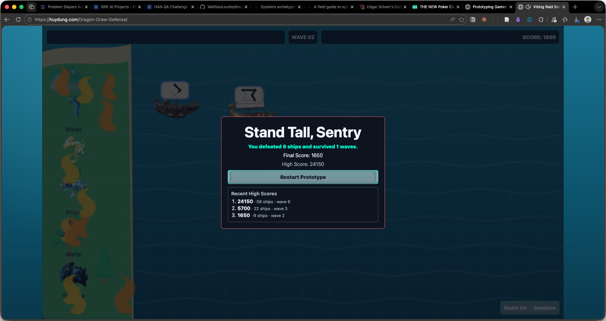
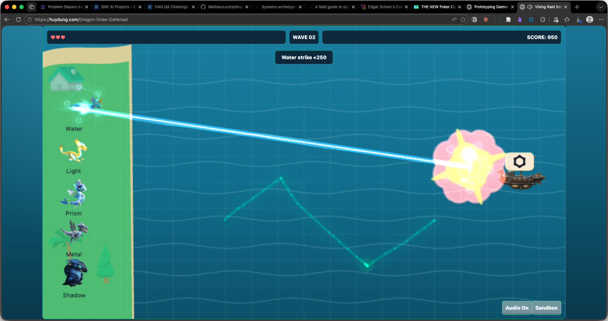
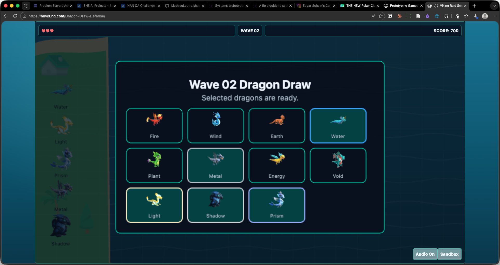
A small prototype is realistically 2–6 hours across 2–3 sessions (token limits reset on a 5-hour rolling window). If you've proven the mechanic is fun, you're done — stop there. That was the goal.
One-glance recap
| Phase | Output | Model | Tool |
|---|---|---|---|
| 1 · Idea | Rated idea list → 1 chosen idea | Creative / mid | Chat AI |
| 2 · Game Design | gdd.md (≤2 pages, design only, with wireframe) |
Creative / mid | Chat AI (Gemini Canvas) |
| 3 · Tech Design | tdd.md (all rules baked in) |
Highest | Agent |
| 4 · Project Plan | plan.md (2–3 functional milestones) |
Highest | Agent |
| 5 · Build | Playable prototype + sprites | Mid first, escalate if stuck | Agent + VS Code + Codex |
| 6 · Bugs | Screenshots + console logs → fixes | Mid first, escalate if stuck | Agent |
| 7 · Iterate | Add features, keep docs in sync | Mid first, escalate if stuck | Agent |
| 8 · Ship | Live GitHub Pages link | Mid first, escalate if stuck | Agent + GitHub |